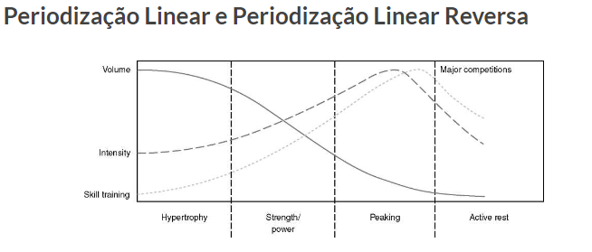
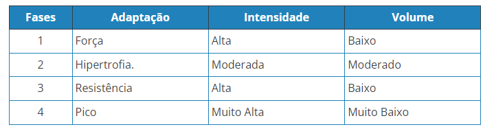
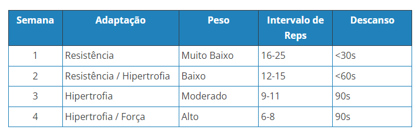
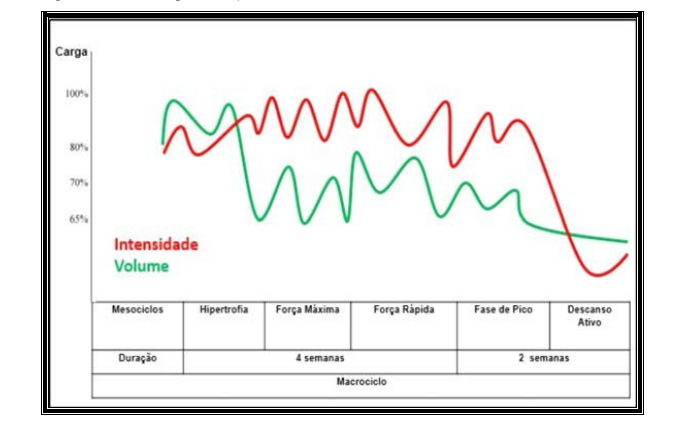
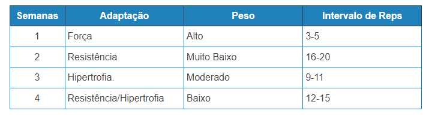
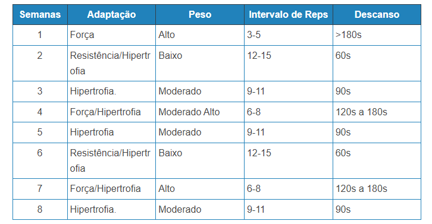
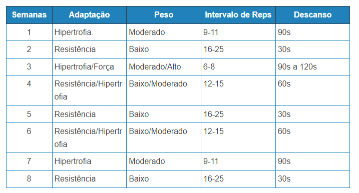

O que é, pra que serve e como fazer Periodização

Periodização é o planejamento e a estruturação do treinamento ao longo da temporada para possibilitar ao atleta alcançar um estado de ótima (a melhor possível) performance em determinada época da temporada (competição ou competições mais importantes). Tem como principal objetivo melhorar a performance e o resultado do atleta. Por meio dessa organização sistemática de atividades, é criada uma rotina de treinos com estímulos diferentes, que se alternam de acordo com o ciclo e as metas de cada praticante, seja ele amador ou profissional. O principal ponto benéfico da periodização é a capacidade do corpo realizar e suportar bem grandes esforços, evitando a ocorrência de lesões. A periodização também evita a fadiga, tão comum em pessoas que exercitam repetidas vezes a mesma parte do corpo. .
Etapas
Período Preparatório
Período que o individuo adquire uma base geral e específica para melhorar seu rendimento.( Fase básica: principal objetivo é aumentar capacidade de aceitar um intensidade alta de carga, na próxima fase, pelo aumento no volume do treino. O treino torna-se mais generalizado de maior duração e menor intensidade, enfatizando os grandes grupamentos musculares.)
Período Manutenção
Objetiva a conservação dos níveis adquiridos, com a possibilidade de elevá-los a patamares superiores, pela manipulação dinâmica das cargas(Estabilizar a aptidão física atingida Diminuir as cargas gerais e específicas.)
Período de Transição
Determina uma quebra dos níveis de rendimento pela redução das cargas.( Contribui para a recuperação completa do potencial de adaptação d organismo e serve como elo de ligação entre os macrociclos.)
Modelos de Periodização
Linear
É a forma mais utilizada e funciona da seguinte forma. A carga começa alta, porém com o aumento da intensidade ela diminui, em ciclos de 4 a 8 semanas. É indicada para alunos iniciantes e intermediários.Ela se inicia com um maior número de repetições e conformeela vai diminuindo, se aumenta a sobrecarga.
Linear
Ela é menos utilizada, e funciona da seguinte forma: acontece uma mudança no volume e intensidade porém em ordem reversa se compararmos com a linear tradicional.

Exemplo de Periodização Linear e Linear Reversa
Linear Reversa
Na sua forma mais geral, a periodização linear divide um período de treino de longo prazo chamado Macrociclo (geralmente leva de 6 meses a um ano ) em várias fases chamadas Mesociclos ( geralmente dura várias semanas ou meses), em que cada mesociclo pode ser dividido em Microciclos semanais ou até diários.
Linear Reversa:
A periodização linear reversa, é exactamente o mesmo, mas ao contrário, em que o seu objectivo é treinar atletas de resistência, como ciclistas, maratonistas, etc...

Periodização Linear para Hipertrofia
O uso de microciclos pode ser uma maneira ainda mais eficaz de usar a periodização linear. O termo microciclo refere-se a mudanças semanais no peso utilizado e nas repetições realizadas.Por exemplo, seguindo o modelo linear, a semana 1 pode ser um microciclo de Resistência Muscular / Hipertrofia com repetições no intervalo de 12-15 repetições. Nesta semana vais trabalhar mais as fibras musculares lentas, que representam cerca de 60% do volume dos teus músculos. Ao entrar na semana 2, para a frente, vamos trabalhando cada vez menos as fibras musculares lentas e trabalhando mais as rápidas. Na semana 2 é o microciclo de hipertrofia pura com repetições no intervalo de 9 a 11, a semana 3 continua aumentando o peso e diminuindo as repetições para o microciclo de força/hipertrofia com repetições no intervalo 6 a 8. E então, na semana 4, entra o microciclo de força, com 3-5 repetições por série. Após a semana 4, o ciclo repete-se.

Na semana 5, 6, 7, e 8, voltas a repetir tudo novamente...
Periodização Linear para Perder Gordura
Tal como te mostrei na parte de hipertrofia, aqui também vamos utilizar os microciclos, para variar o estímulo e cada microciclo é uma semana. Iremos focar-nos em tipos de adaptações que não fujam muito do estímulo de resistência muscular. Um dos estímulos que vamos evitar é a força pura.
Ondulado
Neste modelo a intensidade e volume passa por mudanças diárias ou semanais. Está prática ajuda no desenvolvimento de varias capacidades como: hipertrofia, resistência e a força, esse processo dificulta com que o individuo deixe de evoluir.

Exemplo de Periodização Ondular
No que respeita a motivação, este é um dos melhores modelos de periodização de treino, uma vez que os estímulos de treino variam muito, não se atingindo a monotonia.

Periodização Ondular para Hipertrofia
O que distingue a periodização ondular para hipertrofia da periodização ondular para perda de gordura, é passar mais semanas com estímulos de treino mais específicos de hipertrofia.

Na semana 5, 6, 7, e 8, voltas a repetir tudo novamente...
Periodização Ondular para Perder Gordura
O que distingue a periodização ondular para hipertrofia da periodização ondular para perda de gordura, é passar mais semanas com estímulos de treino mais específicos de hipertrofia. Uma vez que o objectivo é perda de gordura, o treino do gênero de resistência muscular tem de ser o que é feito mais vezes, depois Resistência Hipertrofia e Hipertrofia, e depois por ultimo, o treino de força.
